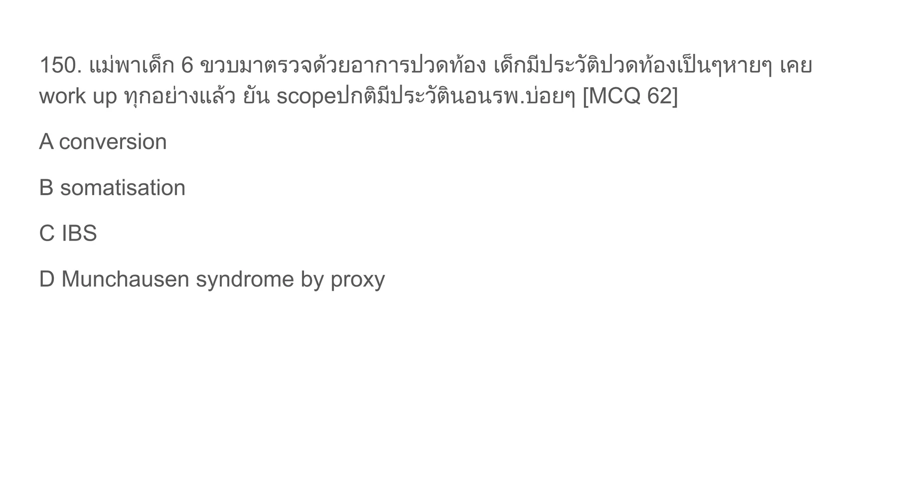
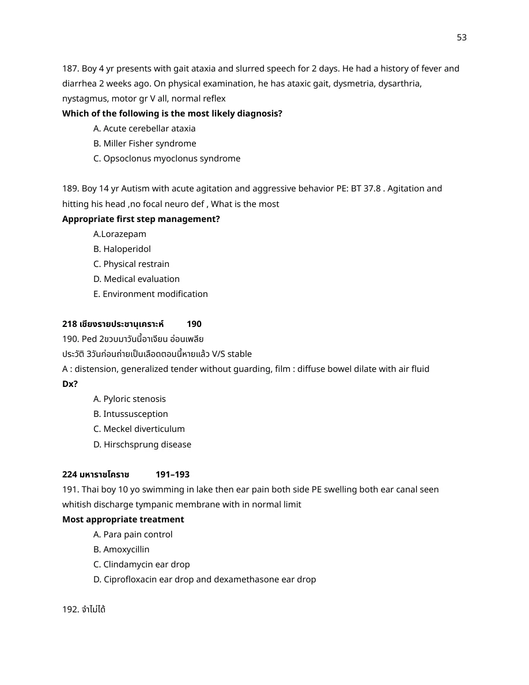

Deep posterior hymenal notch/cleft or transection extending to the base/rim of the hymen
Rationale
Normal hymenal variants include annular, crescentic, septate, cribriform, fimbriated, bumps/tags, and shallow notches. Findings that are concerning for penetrating trauma include deep posterior notches/clefts, healed transection/complete cleft, or absence of posterior hymenal tissue. The source crop for this row highlights that deep notches/clefts to the hymenal rim and transections extending to the base should be documented as suspicious.
References
- AAFP, Evaluating the Child for Sexual Abuse: diagnostic/concerning findings include acute hymenal injury, absence of posterior hymenal tissue, and healed hymenal transection/complete cleft. https://www.aafp.org/pubs/afp/issues/2001/0301/p883.html
Factitious disorder imposed on another / Munchausen syndrome by proxy
Rationale
Recurrent dramatic apnea/cyanosis episodes in a child with repeated normal workups and caregiver-driven presentations should raise concern for fabricated/induced illness by a caregiver. The older exam term is Munchausen syndrome by proxy; DSM-style wording is factitious disorder imposed on another.
References
- Merck Manual Professional, Factitious Disorder Imposed on Another: caregiver falsifies or induces illness in a dependent person, usually a child. https://www.merckmanuals.com/professional/psychiatric-disorders/somatic-symptom-and-related-disorders/factitious-disorder-imposed-on-another
A13-0003A13-Q0003solution_ready
147. Female 13 yr no u/d, come to ED: vomiting 1 day, Complaint frequent vomiting after eating big meal for 5 mo, Today general abd pain after shabu buffet + vomiting
PE: redness + abrasion at rt index [MCQ 65]
ถูกต้อง
Recurrent vomiting after large meals/binge eating for months plus abrasion/redness at the index finger suggests self-induced vomiting; Russell-type hand findings are classic for purging behavior. Bulimia nervosa is binge eating with compensatory behaviors such as self-induced vomiting.
Recurrent vomiting after large meals/binge eating for months plus abrasion/redness at the index finger suggests self-induced vomiting; Russell-type hand findings are classic for purging behavior. Bulimia nervosa is binge eating with compensatory behaviors such as self-induced vomiting.
References
- Merck Manual Professional, Bulimia Nervosa: recurrent binge eating followed by compensatory behavior such as self-induced vomiting. https://www.merckmanuals.com/professional/psychiatric-disorders/eating-disorders/bulimia-nervosa
Symptoms worsen during school days and improve on weekends after a school change and bullying/weight teasing. Somatic complaints such as abdominal pain/vomiting can be the presentation of school avoidance/refusal. Bulimia is less likely here because the key timing is school-related rather than binge-purge behavior.
Symptoms worsen during school days and improve on weekends after a school change and bullying/weight teasing. Somatic complaints such as abdominal pain/vomiting can be the presentation of school avoidance/refusal. Bulimia is less likely here because the key timing is school-related rather than binge-purge behavior.
References
- Merck Manual Consumer, School Avoidance: stress, peer rejection/bullying, and physical symptoms during school can drive school avoidance. https://www.merckmanuals.com/home/children-s-health-issues/behavioral-problems-in-children/school-avoidance
A13-0005A13-Q0005solution_ready
150. แม่พาเด็ก 6 ขวบมาตรวจด้วยอาการปวดท้อง เด็กมีประวัติปวดท้องเป็นๆหายๆ เคย work up ทุกอย่างแล้ว ยัน scope ปกติ มีประวัตินอนรพ.บ่อยๆ [MCQ 62]

crop
ยังไม่ถูก
A. conversion
ยังไม่ถูก
B. somatisation
ยังไม่ถูก
C. IBS
ถูกต้อง
The child has repeated abdominal-pain presentations, extensive normal workups including scope, and frequent hospitalizations driven by the caregiver. This pattern is most concerning for factitious disorder imposed on another / Munchausen syndrome by proxy, not IBS or somatization in the child.
The child has repeated abdominal-pain presentations, extensive normal workups including scope, and frequent hospitalizations driven by the caregiver. This pattern is most concerning for factitious disorder imposed on another / Munchausen syndrome by proxy, not IBS or somatization in the child.
References
- Merck Manual Professional, Factitious Disorder Imposed on Another. https://www.merckmanuals.com/professional/psychiatric-disorders/somatic-symptom-and-related-disorders/factitious-disorder-imposed-on-another
A13-0006A13-Q0006solution_ready
A 5-year-old boy was brought to emergency department at night due to had attacks of frightening with imagination of a snake crawling over him and he was acting as trying to remove it. You assessed the child and find no acute physical illness and he was cooperative and quite intelligent. What is the most appropriate explanation for the child behavior?
ยังไม่ถูก
A. Night terror
ยังไม่ถูก
B. Encephalopathy
ยังไม่ถูก
C. Delusional infestation
ถูกต้อง
The child is otherwise well, cooperative, intelligent, and has acute frightening visual/tactile animal imagery at night. This does not fit night terror well because he is assessable/cooperative rather than confused and inconsolable from sleep. The vignette matches acute phobic hallucinations in young children, classically involving insects/snakes crawling on or near them.
The child is otherwise well, cooperative, intelligent, and has acute frightening visual/tactile animal imagery at night. This does not fit night terror well because he is assessable/cooperative rather than confused and inconsolable from sleep. The vignette matches acute phobic hallucinations in young children, classically involving insects/snakes crawling on or near them.
References
- Pediatric Research abstract, Tactile and Visual Phobic Hallucinations: children vividly describe insects and snakes crawling on them or in the environment. https://www.nature.com/articles/pr1999853
A13-0007A13-Q0007solution_ready
80. ชายสูงอายุ + UTI dementia, agitation Treatment
ยังไม่ถูก
A. Lorazepam
ยังไม่ถูก
B. Alprazolam
ยังไม่ถูก
C. Risperidone
ยังไม่ถูก
D. Diphenhydramine
ถูกต้อง
Older patient with dementia, UTI, and agitation is delirium until proven otherwise. First-line treatment is nonpharmacologic: treat the cause, reorient, reduce triggers, ensure safety. Benzodiazepines and diphenhydramine can worsen delirium; antipsychotics are reserved for severe distress or danger.
Older patient with dementia, UTI, and agitation is delirium until proven otherwise. First-line treatment is nonpharmacologic: treat the cause, reorient, reduce triggers, ensure safety. Benzodiazepines and diphenhydramine can worsen delirium; antipsychotics are reserved for severe distress or danger.
References
- NICE Delirium guideline: manage distress/risk with de-escalation first; use short-term antipsychotic only if needed. https://www.nice.org.uk/guidance/cg103
The patient is a prisoner with pain but normal objective evaluation. The key differentiator is external incentive: avoiding jail/legal consequences or gaining benefit from being ill. That makes malingering more likely than factitious disorder.
The patient is a prisoner with pain but normal objective evaluation. The key differentiator is external incentive: avoiding jail/legal consequences or gaining benefit from being ill. That makes malingering more likely than factitious disorder.
References
- Medscape Somatic Symptom and Related Disorders overview: malingering is symptom production with external incentives; factitious disorder lacks external rewards. https://emedicine.medscape.com/article/918628-overview
Neurologic/sensory complaints with normal eye evaluation and no organic explanation fit functional neurological symptom disorder, historically called conversion disorder. Factitious/malingering would require evidence of intentional symptom production or external gain, which is not given.
Neurologic/sensory complaints with normal eye evaluation and no organic explanation fit functional neurological symptom disorder, historically called conversion disorder. Factitious/malingering would require evidence of intentional symptom production or external gain, which is not given.
References
- Merck Manual Professional, Functional Neurological Symptom Disorder: neurologic symptoms such as blindness can occur without findings consistent with neurologic disease. https://www.merckmanuals.com/professional/psychiatric-disorders/somatic-symptom-and-related-disorders/functional-neurological-symptom-disorder
A13-0010A13-Q0010solution_ready
83. Male 70 years old presented with abdominal pain (ureteric colic). Past history of cholecystectomy and appendectomy. Hx. CAG. This visit presented with similar symptom and told nurse that he wants blood test.
ถูกต้อง
Repeated presentations, prior procedures, and requesting blood tests without a clear external incentive suggest illness-seeking/sick-role behavior, which is factitious disorder. Malingering would need a clear external reward such as avoiding prison/work or obtaining money/drugs.
Repeated presentations, prior procedures, and requesting blood tests without a clear external incentive suggest illness-seeking/sick-role behavior, which is factitious disorder. Malingering would need a clear external reward such as avoiding prison/work or obtaining money/drugs.
References
- Johns Hopkins Psychiatry Guide, Factitious Disorder: intentional feigning/production of symptoms without clear external rewards. https://www.hopkinsguides.com/hopkins/view/Johns_Hopkins_Psychiatry_Guide/787074/8/Factitious_Disorder
Factitious disorder imposed on another / Munchausen syndrome by proxy
Rationale
Mother repeatedly brings the child for multiple illnesses; current apnea/cyanosis story resolves with normal findings. This is classic concern for medical child abuse / factitious disorder imposed on another.
References
- Merck Manual Professional, Factitious Disorder Imposed on Another. https://www.merckmanuals.com/professional/psychiatric-disorders/somatic-symptom-and-related-disorders/factitious-disorder-imposed-on-another
The patient has severe psychotic agitation, is physically restrained, and cannot cooperate with oral/IV treatment. An IM antipsychotic is appropriate. When available, IM olanzapine is a good option for acute psychotic agitation and has less EPS risk than haloperidol; avoid combining it with benzodiazepines.
The patient has severe psychotic agitation, is physically restrained, and cannot cooperate with oral/IV treatment. An IM antipsychotic is appropriate. When available, IM olanzapine is a good option for acute psychotic agitation and has less EPS risk than haloperidol; avoid combining it with benzodiazepines.
References
- Project BETA psychopharmacology consensus: antipsychotics are used for psychosis-driven agitation, and second-generation antipsychotics such as olanzapine are preferred when appropriate. https://pmc.ncbi.nlm.nih.gov/articles/PMC3298219/
A13-0013A13-Q0013solution_ready
Male 30yr recent Dx schizophrenia on chlorpromazine แม่พามาด้วยพฤติกรรมเปลี่ยน ไม่คุยกับใครมองแต่เพดาน ตรวจ neuro: E4V5M6, lateral upward resting gaze with voluntary looking when prompt ถามให้ยาอะไรดี
crop
ยังไม่ถูก
A. diazepam
ยังไม่ถูก
B. hadol
ยังไม่ถูก
C. clozapine
ถูกต้อง
Recent chlorpromazine plus sustained upward gaze with ability to look voluntarily when prompted is oculogyric crisis, an acute dystonic reaction from antipsychotic dopamine blockade. Treat with anticholinergic antihistamine such as diphenhydramine or benztropine.
Recent chlorpromazine plus sustained upward gaze with ability to look voluntarily when prompted is oculogyric crisis, an acute dystonic reaction from antipsychotic dopamine blockade. Treat with anticholinergic antihistamine such as diphenhydramine or benztropine.
References
- Merck Manual Professional, Acute dystonic reactions from antipsychotics are treated with anticholinergic agents such as diphenhydramine/benztropine. https://www.merckmanuals.com/professional/neurologic-disorders/movement-and-cerebellar-disorders/dystonia
A13-0014A13-Q0014solution_ready
Male 40 yo, confuse, aggressive, paranoid, hx of mental illness (no list of medication), discontinue medication for 4 mo. Physical restrain was performed. Q - proper medical restrain?
crop
ยังไม่ถูก
A. oral lorazepam
ยังไม่ถูก
B. oral risperidone
ยังไม่ถูก
C. IM diazepam
ถูกต้อง
The patient is acutely confused/aggressive/paranoid and already physically restrained, so oral medication is unlikely to be feasible. In this option set without IM olanzapine, IM haloperidol is the best medication restraint for psychotic agitation. Benzodiazepines alone are less targeted for psychosis and can worsen delirium/oversedation.
The patient is acutely confused/aggressive/paranoid and already physically restrained, so oral medication is unlikely to be feasible. In this option set without IM olanzapine, IM haloperidol is the best medication restraint for psychotic agitation. Benzodiazepines alone are less targeted for psychosis and can worsen delirium/oversedation.
References
- Project BETA psychopharmacology consensus: antipsychotics are indicated for psychosis-driven agitation; route depends on cooperation and urgency. https://pmc.ncbi.nlm.nih.gov/articles/PMC3298219/
A13-0015A13-Q0015solution_ready
60 yo alcoholic poor compliant bipolar 1 day his wife reported he was agitate and confuse. PE HR 120 T37 BP 150/50 Orientate only to self, poor insight, tremulous. Dx?
crop
ยังไม่ถูก
A. Bipolar mania episode
ยังไม่ถูก
B. Acute psychotic disorder
ถูกต้อง
Alcohol use with poor compliance followed by agitation, confusion/disorientation, tremor, tachycardia, and hypertension fits severe alcohol withdrawal/delirium tremens rather than mania or primary psychosis.
Alcohol use with poor compliance followed by agitation, confusion/disorientation, tremor, tachycardia, and hypertension fits severe alcohol withdrawal/delirium tremens rather than mania or primary psychosis.
References
- Merck Manual Professional, Alcohol Toxicity and Withdrawal: delirium tremens includes disorientation, agitation, tremor, autonomic hyperactivity such as tachycardia/hypertension/fever. https://www.merckmanuals.com/en-pr/professional/special-subjects/illicit-drugs-and-intoxicants/alcohol-toxicity-and-withdrawal
A13-0016A13-Q0016solution_ready
189. Boy 14 yr Autism with acute agitation and aggressive behavior. PE: BT 37.8. Agitation and hitting his head, no focal neuro def. What is the most appropriate first step management?

crop
ยังไม่ถูก
A. Lorazepam
ยังไม่ถูก
B. Haloperidol
ยังไม่ถูก
C. Physical restrain
ยังไม่ถูก
D. Medical evaluation
ถูกต้อง
For autistic adolescents with acute agitation, first-line management is safety, low-stimulation environment, removal of triggers, caregiver-informed de-escalation, and assessment for medical causes. Physical restraint/medication is reserved when less restrictive measures fail or immediate danger cannot be controlled.
For autistic adolescents with acute agitation, first-line management is safety, low-stimulation environment, removal of triggers, caregiver-informed de-escalation, and assessment for medical causes. Physical restraint/medication is reserved when less restrictive measures fail or immediate danger cannot be controlled.
References
- Pediatric agitation BETA consensus: start with de-escalation/environmental and behavioral strategies, evaluate triggers/medical causes, and use medication/restraint when needed for safety. https://pmc.ncbi.nlm.nih.gov/articles/PMC6404720/
A13-0017A13-Q0017solution_ready
71) Male 19 yr U/D Bipolar on litium, fluoxetine, risperidone ไม่ได้มีปรับยาช่วงนี้ อยู่ๆมาด้วย AOC มักเหม่อลอย Stupor, mutism, มาตรวจพบ Echolalia พูดตามคนตรวจ ทําท่าทางซํ้าๆเดิม บางครั้ง ก็ค้างอยู่ท่าเดิมๆ เกร็งต้านขณะตรวจ ไม่ให้ความร่วมมือ Waxy flexibility PE อื่นๆ ปกติ, V/S ปกติ, no head injury Hx ถาม Dx ? A) Akinetism B) Catatonia C) Delirium D) Locked-in syndrome E) Serotonin syndrome
Stupor, mutism, echolalia, stereotyped/repetitive movements, posturing, negativism/resistance, and waxy flexibility are classic catatonia features. Normal vitals/no head injury and the specific psychomotor signs make delirium, locked-in syndrome, and serotonin syndrome less likely.
References
- NCBI Bookshelf, Catatonia: DSM-5-TR features include stupor, mutism, echolalia, posturing, negativism, and waxy flexibility. https://www.ncbi.nlm.nih.gov/books/NBK430842/
Sudden blindness after major stressor with normal ophthalmologic/neurologic workup and preserved blink-to-threat is functional neurological symptom disorder (conversion). No external incentive is given, so malingering is less likely; no evidence of deliberate falsification, so factitious is less likely.
References
- Merck Manual Professional, Functional Neurological Symptom Disorder: blindness and other neurologic symptoms can occur without neurologic disease; diagnosis follows appropriate exclusion and positive inconsistency signs. https://www.merckmanuals.com/professional/psychiatric-disorders/somatic-symptom-and-related-disorders/functional-neurological-symptom-disorder
A13-0019A13-Q0019solution_ready
74 ชาย82ปี u/d dementia,HT อยู่nursing home agitate ,โวยวาย+ผลักเจ้าหน้าที่,ดึงสายนํ้าเกลือมา 1วัน v/s stable PE:WNL EKG :NSR. ถาม 1st line drug 1.diazepam 2.lorazepam 3.midazolam 4.haloperidol 5.risperidone
Stable nursing-home dementia patient with agitation/assaultive behavior and line pulling. Nonpharmacologic measures are preferred first, but among the listed drugs, an antipsychotic is the appropriate medication class. Risperidone is preferred over benzodiazepines for behavioral/psychotic agitation in dementia when medication is necessary; haloperidol is more often used for acute delirium but has higher EPS risk.
References
- NICE Delirium guideline cautions against benzodiazepines and supports short-term antipsychotic only when needed for distress/risk. https://www.nice.org.uk/guidance/cg103